Negocios con ganas de crecer
Restaurantes, tiendas y productoras que necesitan verse tan bien como funcionan (y estar listos para la próxima sucursal).
Famko · Mandingal · Incognito
Te ayudo a encontrar eso que hace única a tu marca y a convertirlo en una identidad que se recuerda, conecta y vende. Para emprendedores, profesionales y negocios con ganas de crecer.
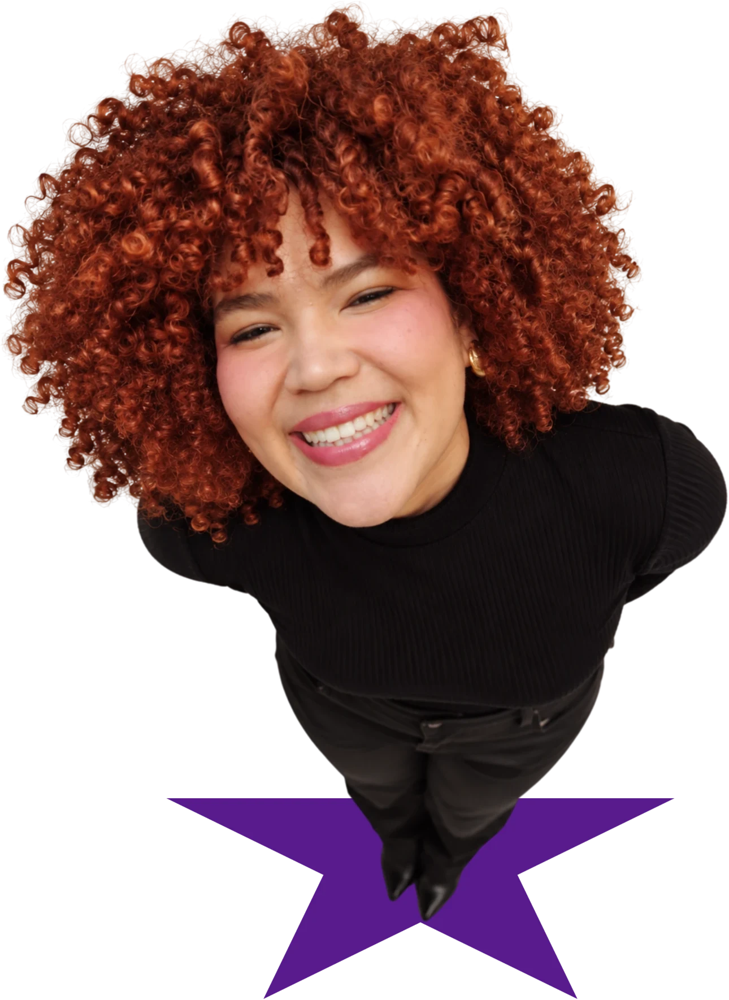
Hellooo, soy Yarife
Lo que hago
No te entrego solo un logo: primero definimos tu estrategia y tu concepto, y después construimos un sistema visual completo, listo para usar en redes, empaques, papelería o tu local, sin perder la coherencia aunque crezcas.
Restaurantes, tiendas y productoras que necesitan verse tan bien como funcionan (y estar listos para la próxima sucursal).
Famko · Mandingal · Incognito
Expertos que quieren posicionarse por lo que saben y dejar de competir por precio. Tu conocimiento es tu activo más valioso.
TO con Ander
Ideas que necesitan una identidad sólida para presentarse ante clientes, aliados e inversionistas desde el día uno.
Venecicla · Morrow
Lo que te puedes llevar ↓
Proyectos seleccionados
Cada proyecto empezó con la misma pregunta: ¿qué hace única a esta marca? Esto fue lo que encontramos y cómo lo convertimos en identidad.
01Proyecto
El poder de reunir
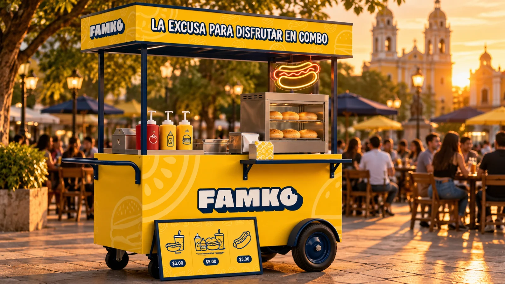
El contexto y el Power escondido
Famko era un carrito de perros calientes como cualquier otro: sin nombre visible, sin identidad y con un menú escrito a mano en cartulina. Servía comida con sabor de calle y atención de restaurante, y su sueño era grande: convertirse en franquicia.
Escuchando su historia apareció el Power escondido: nadie va a Famko solo, se va en combo. Con la familia, con los panas, con el equipo de la oficina. Su verdadero producto no era el perro caliente, era el plan: reunir. Con esa idea presenté tres rutas creativas, y ganó la más cercana y familiar.
Cómo lo desatamos
Un logo gordito y amigable, con contorno de sticker y un detalle que nadie olvida: la O tiene un mordisco. Amarillo para el antojo, azul para la confianza, Barni y Bebas Neue para hablar fuerte y claro, e ilustraciones de línea que se comen todo el sistema.
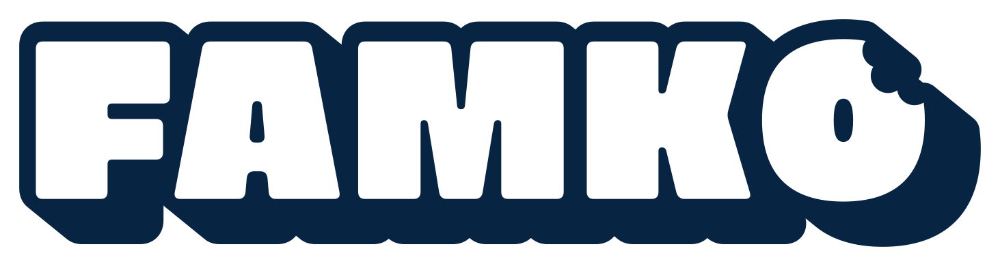
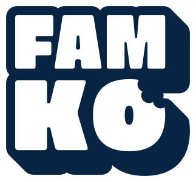
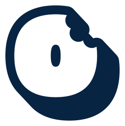
Barni
Principal · titulares y antojos
ABCDEFGHIJKLMNOPQRSTUVWXYZ
abcdefghijklmnopqrstuvwxyz
Bebas Neue
Secundaria · menú y precios
ABCDEFGHIJKLMNÑOPQRSTUVWXYZ
0123456789 $ · ¡! ¿?
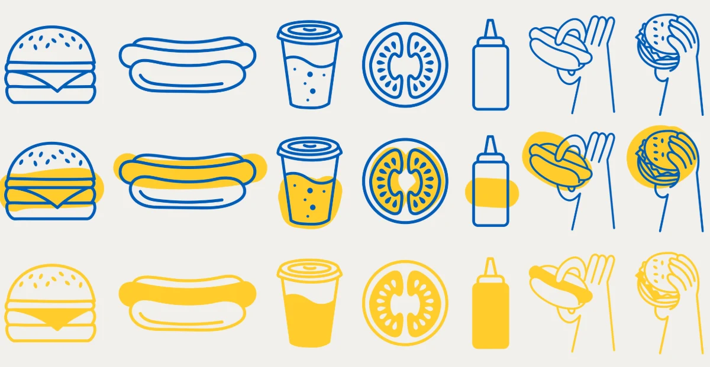
La marca en la vida real
Después llevamos la marca a la calle: empaques, uniformes, menú, vasos, afiches y redes. Cada pieza repite la misma idea, la que ahora va impresa en cada bolsa: Famko es la excusa para disfrutar en combo.


Antes y después
Antes
Después

Famko pasó de ser «otro carrito de perros» a una marca con sistema propio, que se ve como franquicia desde el primer combo. Con su brandkit, cualquier nuevo punto de venta puede replicarla sin perder el sabor.
02Proyecto
El poder de la emoción
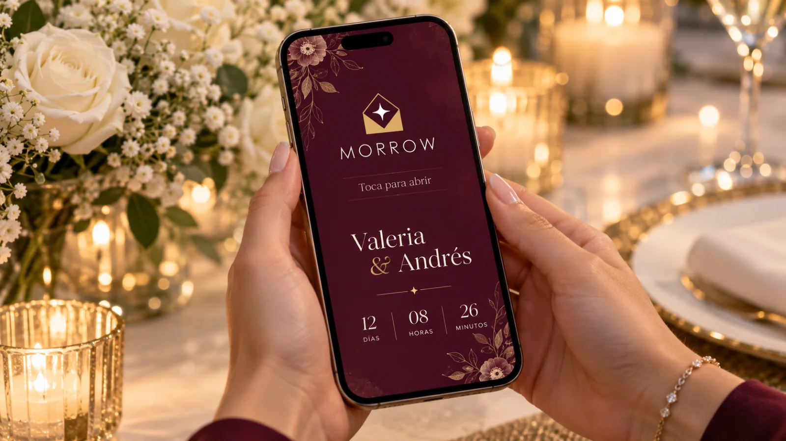
El contexto y el Power escondido
Morrow crea invitaciones digitales 100 % personalizadas que, además, le dan al anfitrión un panel para gestionar confirmaciones, listas de regalos, mapas e invitados presenciales o virtuales. Bodas, quince años, graduaciones, baby showers… Nada de plantillas genéricas: experiencias.
Su imagen anterior era nocturna y misteriosa, pero no hablaba de celebración. Al conversar sobre su filosofía encontramos el Power: abrir la invitación es el primer momento del evento, ahí nace la expectativa. Por eso el Power de Morrow es la emoción, y su promesa cabe en una frase: «La emoción empieza con la invitación».
Cómo lo desatamos
El isotipo resume la promesa en un gesto: un sobre que se abre y deja ver una estrella. Una tipografía geométrica de trazo fino, vino profundo para la ocasión especial, dorado para la celebración y lilas suaves para la calma del anfitrión. Un sistema que se viste de gala sin perder calidez.
Poppins ExtraLight
Logotipo y titulares, con mucho aire entre letras
ABCDEFGHIJKLMNÑOPQRSTUVWXYZ
abcdefghijklmnñopqrstuvwxyz 0123456789
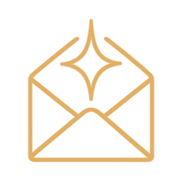
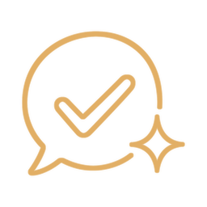
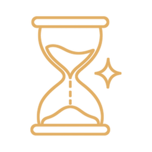
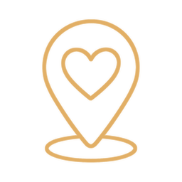
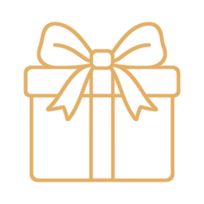
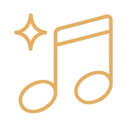
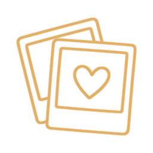
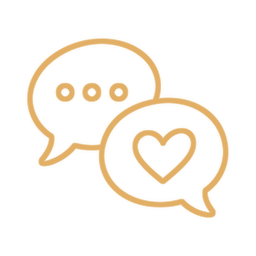
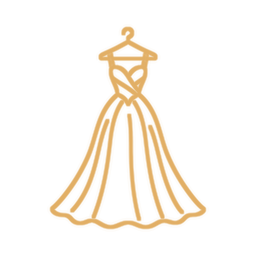
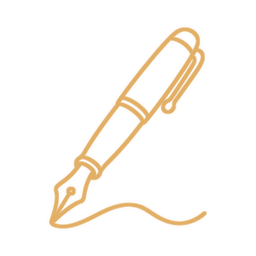
Íconos dorados para cada función de la invitación: sobre, confirmación, cuenta regresiva, ubicación, regalos, música, fotos, mensajes, vestimenta y firma.
La marca en la vida real
La marca vive donde ocurre la magia: en el celular del invitado, en el panel del anfitrión y en cada detalle que acompaña la celebración.
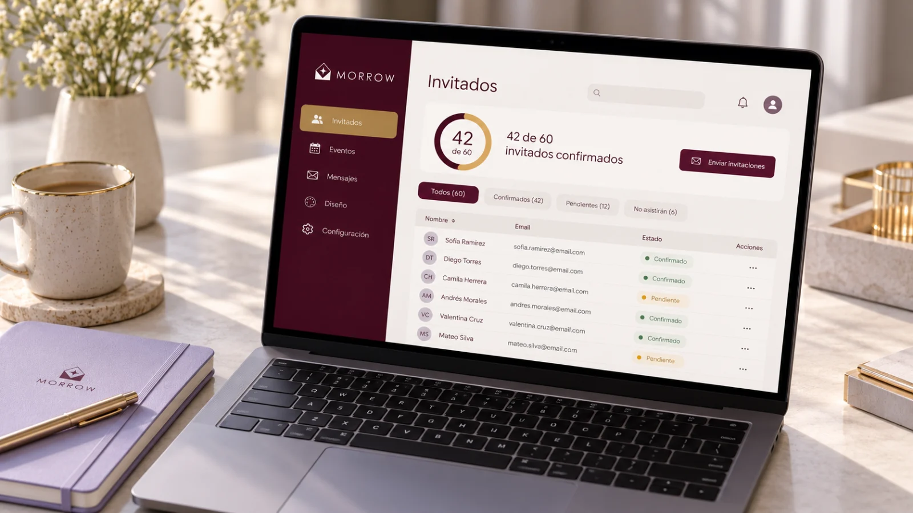
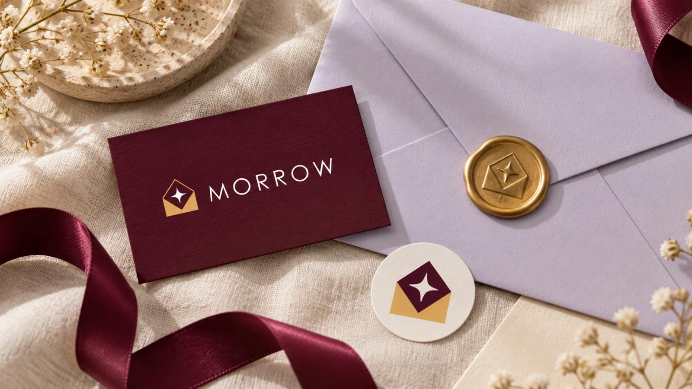
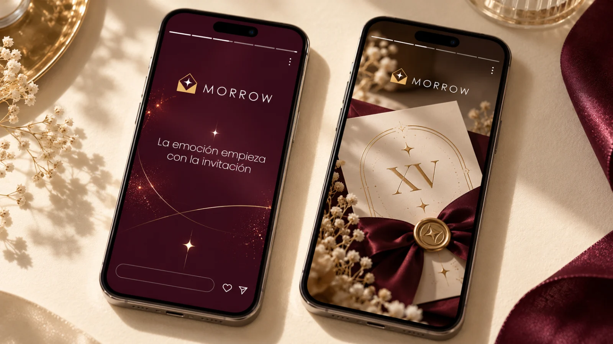
Antes y después
Antes
Morrow pasó de una estética nocturna y genérica a una identidad elegante y emotiva que comunica, en un solo vistazo, lo que hace distinto: emocionar a los invitados y simplificarle la vida al anfitrión.
03Proyecto
El poder del misterio
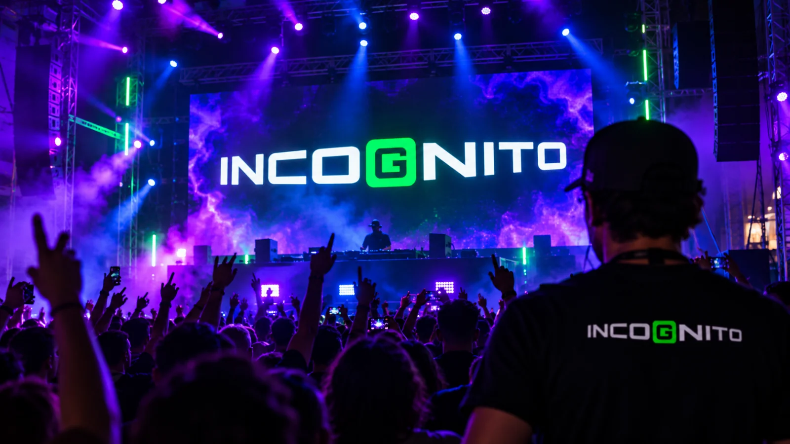
El contexto y el Power escondido
Incognito nació desde cero: la única pista era hacer fiestas temáticas y una estética que mezclara el glitch, los televisores viejos y el universo de Matrix. La marca tenía que funcionar de noche, en la pista, en una franela y en la pantalla del celular a las 2:00 a. m.
El nombre ya lo decía todo: lo desconocido engancha. En lugar de explicarlo todo, la marca tenía que provocar preguntas. ¿Qué viene? ¿Dónde? ¿Cuándo? Su Power es el misterio.
Cómo lo desatamos
La G se encierra en una caja, como un secreto a punto de revelarse. Orbitron le da el tono futurista y Poppins se encarga de que todo se lea bien. Verde neón para encender la pista, morados y azul eléctrico para la noche, y elementos glitch con signos de interrogación que convierten cada pieza en un adelanto.
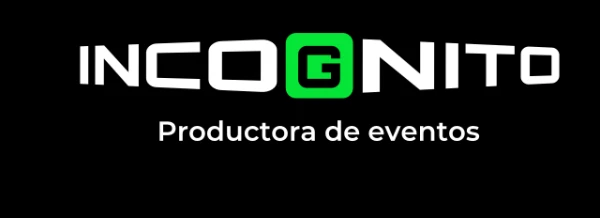
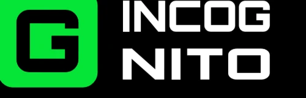
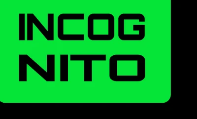
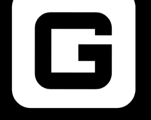
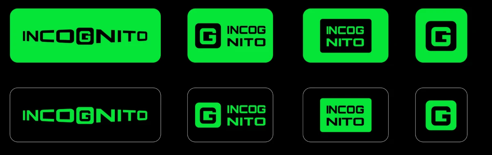
Orbitron Black
Principal · titulares futuristas
ABCDEFGHIJKLMNOPQRSTUVWXYZ
0123456789 ¿? ¡!
Poppins
Secundaria · textos y datos del evento
ABCDEFGHIJKLMNÑOPQRSTUVWXYZ
abcdefghijklmnñopqrstuvwxyz 0123456789
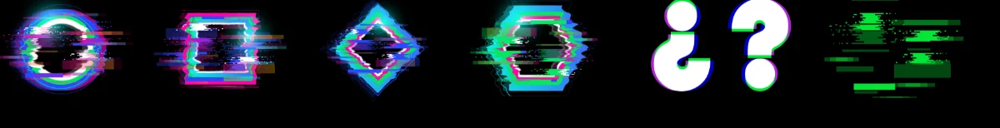
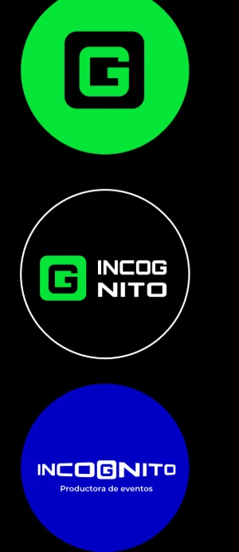
La marca en la vida real
Para anunciar cada evento sin revelar demasiado creamos piezas de expectativa que dicen poco y despiertan mucho. Y para que el equipo (y los fans) lleven la marca puesta: pulseras, credenciales, franelas y gorras.
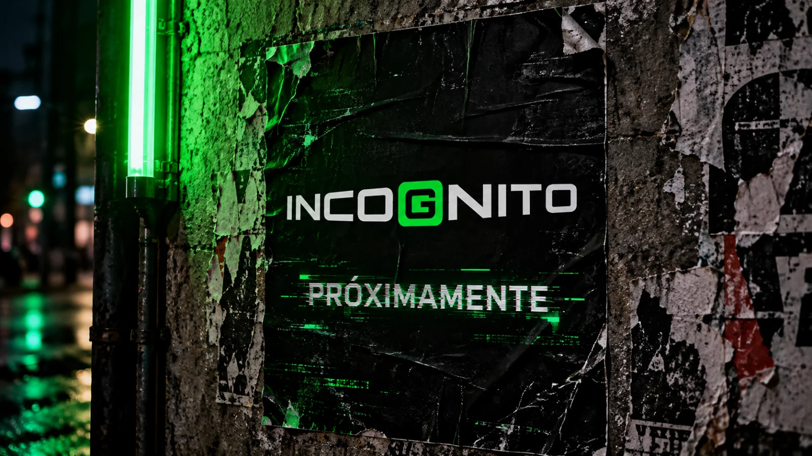
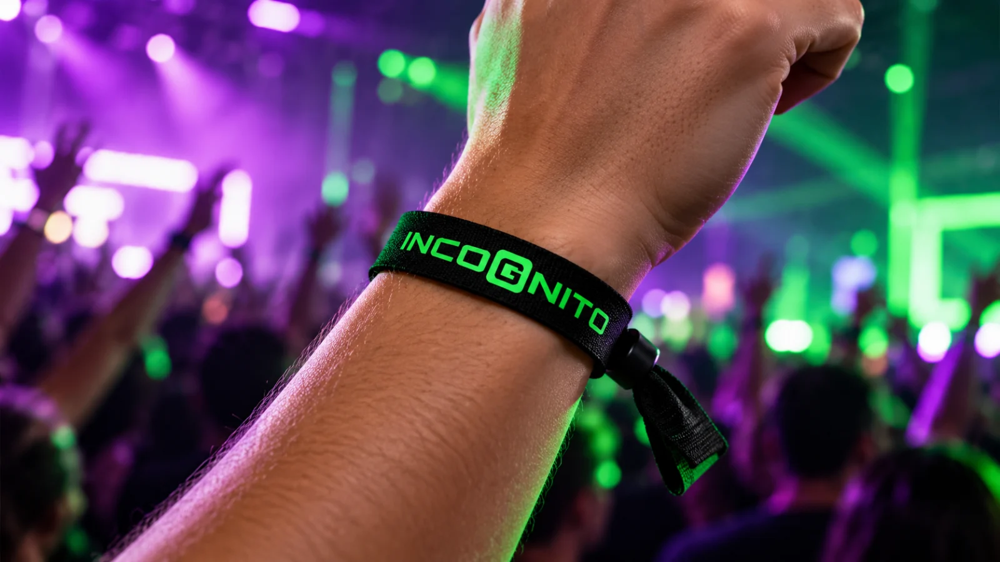
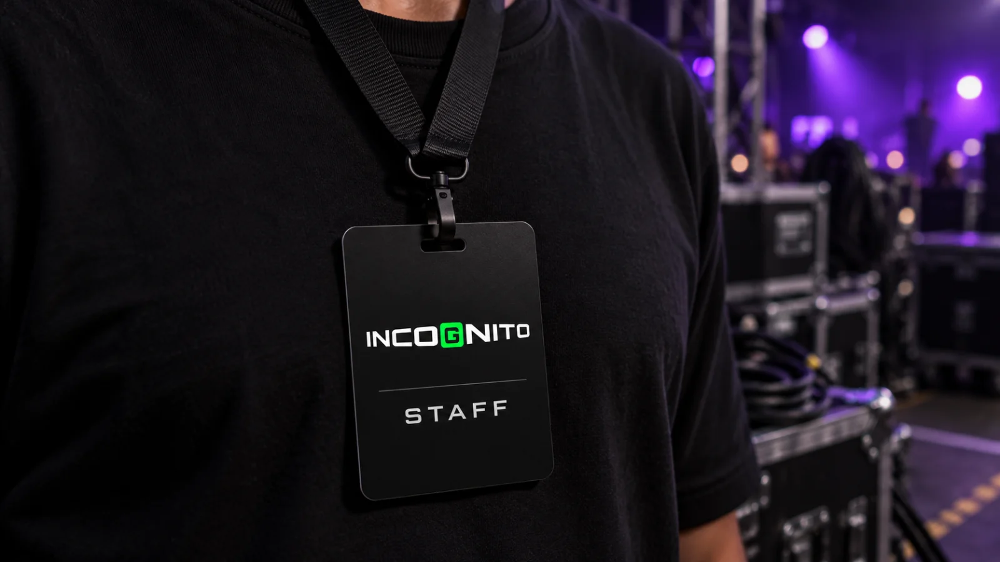

Antes y después
Antes: solo referencias
De un puñado de referencias (televisores viejos, glitch y Matrix) a una identidad nocturna, flexible y reconocible al instante, con todo lo necesario para anunciar el próximo evento sin revelar demasiado.
04Proyecto
El poder del juego

El contexto y el Power escondido
Anderson Colmenares es terapeuta ocupacional y trabaja con niños. Llegó como un especialista ofreciendo sus servicios, sin marca y sin nombre: hasta el nombre «TO con Ander» fue una propuesta del proceso. Quería compartir información sobre terapia ocupacional de forma accesible y cercana, y convertirse en un referente.
Su diferencial no era solo acompañar a los niños, sino enseñarles a los papás nuevas estrategias para acompañarlos. «Volver a ser niño con tu hijo». Su Power es el juego como herramienta para aprender.
Cómo lo desatamos
Un logo armado con piezas, como bloques de juguete: la T es una barra y una cápsula, la O es un círculo y la A, un semicírculo con patitas. Unas siglas que también son firma, fáciles de recordar y de reproducir. Quicksand redondea la voz y la paleta (morado, amarillo y celeste) juega en patrones que parecen salidos de un salón de estimulación.
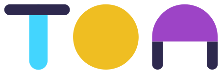
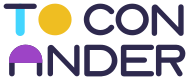
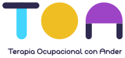
Quicksand Bold
Titulares · redondeada y cercana
ABCDEFGHIJKLMNÑOPQRSTUVWXYZ
abcdefghijklmnñopqrstuvwxyz 0123456789
Quicksand Light
Textos · ligera y fácil de leer
ABCDEFGHIJKLMNÑOPQRSTUVWXYZ
abcdefghijklmnñopqrstuvwxyz 0123456789
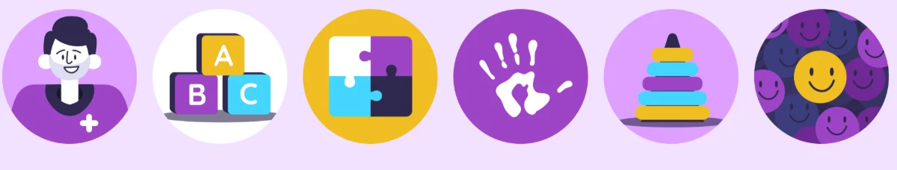
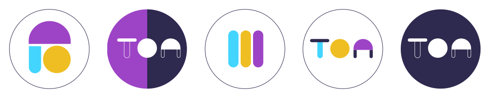
La marca en la vida real
Llevamos el juego a cada punto de contacto: el uniforme, la puerta del consultorio, la papelería y un sistema para Instagram con destacados ilustrados y plantillas para educar desde el primer post.
Antes y después
De especialista sin nombre a una marca personal coherente y memorable, con un manual que le permite a Ander comunicar con responsabilidad afectiva y verse profesional en cada punto de contacto, de la tarjeta al feed.
05Proyecto
El poder de transformar
El contexto y el Power escondido
Venecicla empezó desde cero. En Venezuela, el reciclaje de plástico tiene un cuello de botella: el material llega sucio y mezclado, y no existe una conexión rentable entre los barrios y la industria. La startup propone una red de micronodos liderados por mujeres que, con ayuda de inteligencia artificial, validan el plástico desde el origen.
No es «una app de reciclaje»: es tecnología, datos y comunidad trabajando juntos. La marca tenía que sentirse tan confiable como una empresa tecnológica y tan humana como el barrio que la hace posible. Su Power es transformar: la basura en recurso y la crisis en oportunidad.
Cómo lo desatamos
Un logotipo en minúsculas, cercano, con un punto verde que es nodo, semilla y señal de «validado» a la vez. Ese punto se convierte en monograma (v•) y en hilo conductor. Azul profundo para la confianza, verde eléctrico para el impacto y TT Interphases para la claridad.
TT Interphases Bold
Principal · titulares y cifras de impacto
ABCDEFGHIJKLMNÑOPQRSTUVWXYZ
abcdefghijklmnñopqrstuvwxyz 0123456789
TT Interphases Regular
Secundaria · textos y datos
ABCDEFGHIJKLMNÑOPQRSTUVWXYZ
abcdefghijklmnñopqrstuvwxyz 0123456789
La marca en la vida real
La identidad se estrenó en la presentación de la startup ante aliados e inversionistas, y está lista para vivir en la app de validación, los puntos de acopio y la logística de la red.
Antes y después
06Proyecto
El poder de lo natural
El contexto y el Power escondido
Mandingal vende frutos secos y alimentos campestres a granel, con un surtido enorme y un don especial: asesorar a sus clientes para comer rico y sano. El cliente llegó con una foto de la hacienda de su abuelo, y desde ahí hicimos bocetos a lápiz hasta encontrar la marca.
Mandingal no vende «snacks»: trae los productos del campo a la vida de los venezolanos, con conocimiento de causa. Su eslogan lo resume a la perfección: salud con sabor.
Cómo lo desatamos
Un lettering con la energía de un snack de estante: una M distintiva y un grano de merey que se cuela como firma. Verdes de siembra y germinación, Articulate y Comfortaa para hablar fuerte y suave, e ilustraciones de la granja que cuentan de dónde viene todo.
Articulate ExtraBold
Títulos
ABCDEFGHIJKLMNÑOPQRSTUVWXYZ
abcdefghijklmnñopqrstuvwxyz 0123456789
Comfortaa
Textos · suave y redondeada
ABCDEFGHIJKLMNÑOPQRSTUVWXYZ
abcdefghijklmnñopqrstuvwxyz 0123456789
La marca en la vida real
Para que la tienda y las redes contaran la misma historia: empaques, etiquetas, señalética y un sistema para Instagram que educa y vende.
Antes y después
De una foto de la hacienda del abuelo y unos bocetos a lápiz a un rebranding completo: una tienda a granel con personalidad propia, lista para asesorar, educar y vender en el mostrador y en redes.

 ¡Manos a la marca!
¡Manos a la marca!
Sobre mí
Estudié Educación, me especialicé en Publicidad y mi primer emprendimiento me enseñó la lección más cara: un logo no es suficiente para crear una marca.
Hoy uno diseño, estrategia y educación para ayudarte a encontrar eso que te hace único y convertirlo en una marca que conecta y vende. Sin postureo, con método y con IA de mi lado.
Cómo trabajo
Un proceso claro, acompañado y sin tecnicismos. Siempre sabes en qué paso estamos y qué viene después.
Escuchamos tu historia. Investigo tu negocio, tu público y tu competencia para encontrar eso que te hace diferente.
Te presento rutas creativas (sí, como hice con Famko) y elegimos juntos el camino. Después diseño el sistema completo.
Llevamos la marca a la vida real: redes, papelería, empaques, uniformes, presentaciones… donde tu cliente te vea.
Te entrego un brandkit o manual para que tu identidad se mantenga coherente aunque crezcas (o te vuelvas franquicia).
Querida marca: ya no quiero seguir diciendo «algún día». Quiero empezar hoy.
Cuéntame de tu marca, tu idea o ese proyecto que llevas meses posponiendo. Te respondo personalmente con los próximos pasos.